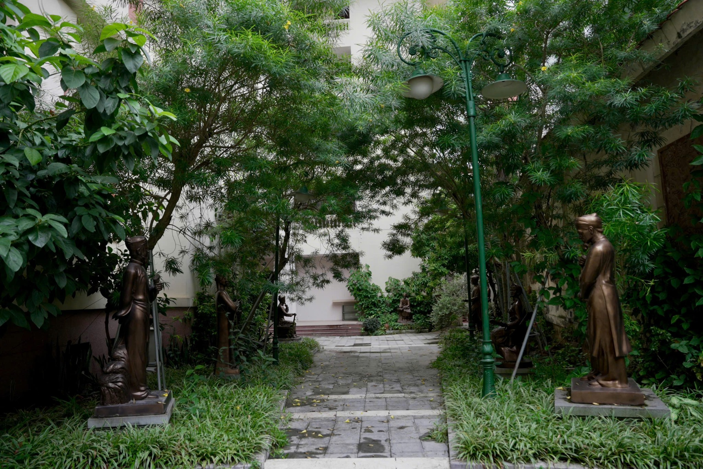
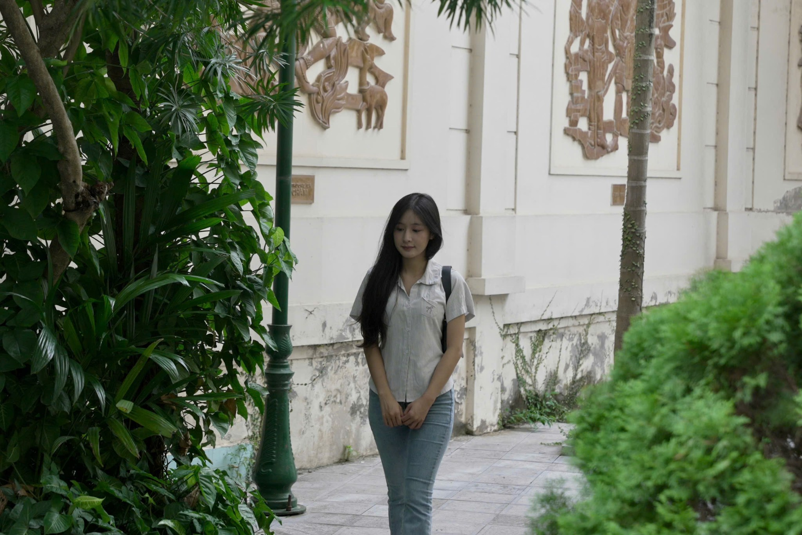
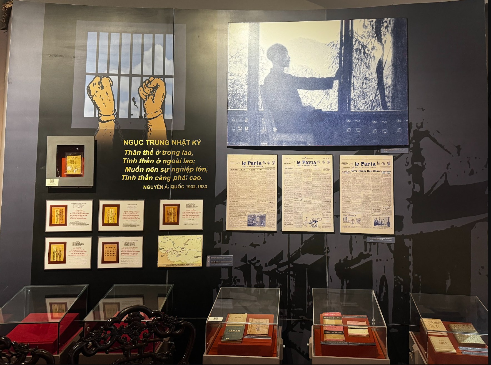
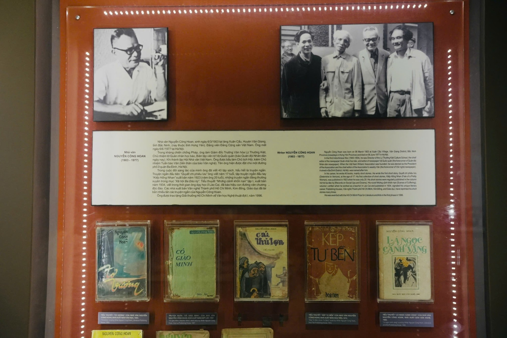
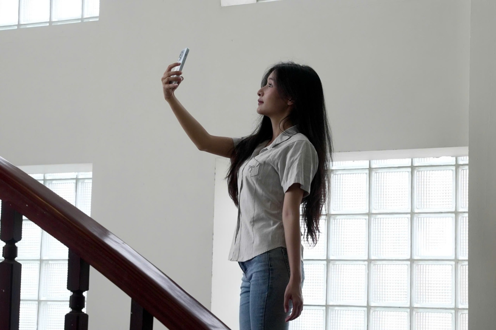
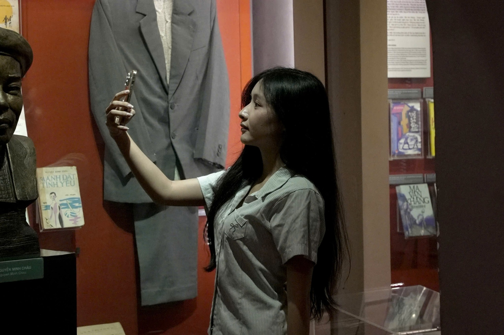

Trong bài
Khi Hà Nội bước vào thu, những chuyến dạo phố, tham quan và khám phá các địa điểm văn hóa cũng trở nên thú vị hơn. Với khuôn viên ngoài trời rợp bóng cây, Bảo tàng Văn học Việt Nam là một điểm đến đáng thử cho những ai muốn tận hưởng thu Hà Nội theo cách mới mẻ.
Tọa lạc tại ngõ 275 Âu Cơ, Bảo tàng Văn học Việt Nam sở hữu khuôn viên xanh mát với những lối đi dưới tán cây, vườn tượng danh nhân cùng các không gian trưng bày mang nét hoài cổ. Đây là địa điểm thích hợp để kết hợp dạo chơi, tham quan và check-in mùa thu, lưu lại những bức ảnh đẹp trong tiết trời dịu mát của Thủ đô.
Thu Hà Nội trong khoảng xanh của vườn tượng
Giữa tiết trời dịu mát của thu Hà Nội, khuôn viên vườn tượng tại Bảo tàng Văn học Việt Nam là nơi lý tưởng để dạo bước và tận hưởng không khí ngoài trời. Những lối đi rợp bóng cây, xen giữa các bức tượng danh nhân văn học, tạo nên một không gian xanh mát, tách biệt với sự nhộn nhịp của phố phường.

Dạo quanh khu vườn, du khách có thể ngắm nhìn các tác phẩm điêu khắc, tận hưởng không khí mùa thu và lưu lại những bức ảnh giữa khung cảnh thiên nhiên. Những tán cây xanh cùng lối đi lát đá cũng tạo nên phông nền phù hợp cho những bức ảnh chụp từ phía sau hoặc những khoảnh khắc dạo bước tự nhiên.

Không cần đến những địa điểm đông đúc, một buổi tham quan Bảo tàng Văn học Việt Nam cũng là cách thú vị để tận hưởng mùa thu. Du khách vừa có thể dạo chơi, check-in mùa thu giữa khuôn viên xanh mát, vừa khám phá những câu chuyện văn chương và tìm hiểu về các danh nhân văn học Việt Nam.
Một buổi chiều thu Hà Nội dành cho văn chương
Sau khi trải nghiệm không gian ngoài trời tại bảo tàng, du khách có thể tiếp tục hành trình khám phá Bảo tàng Văn học Việt Nam tại các phòng trưng bày bên trong. Đây cũng là dịp để tìm hiểu những câu chuyện văn học từng gắn bó với nhiều thế hệ độc giả.
Đằng sau mỗi tác phẩm văn học là những câu chuyện về cuộc đời, sự nghiệp và hành trình sáng tác của người cầm bút. Đến với Bảo tàng Văn học Việt Nam, du khách có dịp khám phá những câu chuyện ấy qua hệ thống tư liệu, hình ảnh và hiện vật được lưu giữ tại đây.
Hệ thống trưng bày giới thiệu tiến trình phát triển của văn học Việt Nam qua các thời kỳ, với nhiều hình ảnh, tư liệu và hiện vật gắn liền với cuộc đời, sự nghiệp của các nhà văn, nhà thơ. Từ những tác phẩm quen thuộc trong sách giáo khoa đến các bản thảo, kỷ vật của người sáng tác, mỗi khu trưng bày đều có những nội dung đáng để dừng chân tìm hiểu.

Du khách có thể dành thời gian tìm hiểu về tác giả mình yêu thích, đọc những câu chuyện phía sau trang sách hoặc quan sát các kỷ vật gắn với cuộc đời người viết. Những hoạt động này cũng là một gợi ý để chuyến khám phá thu Hà Nội thêm thú vị và ý nghĩa.

Thu Hà Nội qua những khung hình hoài cổ
Bên cạnh khuôn viên xanh mát, không gian bên trong Bảo tàng Văn học Việt Nam cũng có nhiều góc chụp đáng để khám phá. Mỗi khu vực lại mang một nét riêng, từ cầu thang với những ô cửa kính đón ánh sáng tự nhiên đến các phòng trưng bày có tủ hiện vật màu cam đất, tường xanh trầm và hệ thống đèn rọi.
Sự kết hợp giữa kiến trúc, màu sắc và ánh sáng tạo nên những khung hình mang nét hoài cổ. Du khách có thể tận dụng ánh sáng từ ô cửa kính để chụp ngược sáng tại cầu thang hoặc lựa chọn những góc đứng dưới mái vòm, bên cạnh tủ trưng bày để ghi lại những bức ảnh ấn tượng.


Để thực hiện một bộ ảnh check-in mùa thu, bạn có thể lựa chọn sơ mi sáng màu, quần jeans hoặc trang phục mang gam be, nâu, kem. Thay vì tạo dáng cầu kỳ, những khoảnh khắc bước lên cầu thang, quan sát hiện vật hay đứng dưới mái vòm sẽ giúp bức ảnh tự nhiên hơn.
Check-in mùa thu với những bộ trang phục tối giản
Để có bộ ảnh check-in mùa thu đẹp tại bảo tàng, việc lựa chọn trang phục phù hợp với không gian cũng là điều đáng lưu ý. Những gam màu trung tính như trắng kem, be, nâu nhạt hoặc xanh pastel là lựa chọn phù hợp với cả khuôn viên ngoài trời và các phòng trưng bày mang màu sắc hoài cổ.
Bạn có thể lựa chọn áo sơ mi rộng phối cùng quần jeans, cardigan mỏng hoặc quần vải ống suông để vừa thoải mái khi tham quan, vừa có những bức ảnh tự nhiên. Một chiếc túi tote hay cuốn sổ nhỏ cũng đủ tạo điểm nhấn cho bộ trang phục mà không cần quá nhiều phụ kiện.
Thu Hà Nội đâu chỉ có những con phố quen thuộc
Mỗi mùa thu, Hà Nội lại thu hút người dân và du khách với những góc phố, hàng cây và hoạt động văn hóa đặc trưng. Tuy nhiên, không phải lúc nào một chuyến đi cũng cần lựa chọn những điểm đến đông người. Đôi khi, một buổi tham quan bảo tàng có thể mang lại trải nghiệm mới mẻ.
Giữa nhiều lựa chọn vui chơi, một ngày thu Hà Nội tại bảo tàng có thể không quá náo nhiệt nhưng vẫn đủ thú vị nhờ những câu chuyện văn học và góc nhìn mới về một địa điểm văn hóa của thành phố.
Bảo tàng Văn học Việt Nam